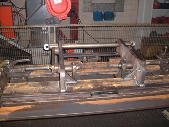

OUR WORK
Farm Machinery
Repairs and modifications for agricultural equipment.
Discuss your project
The detail.
Repairs to farm machinery and changes to existing equipment to extend its capability. Contact the team to discuss the machine, damage or modification required.
- Machinery repairs
- Equipment modifications
- Replacement components
Discuss your location, intended use and requirements with the team. The scope, specification and timing are agreed for your project.
Explore the work ↗